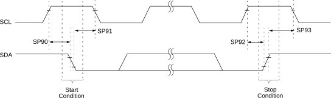

| Standard Operating Conditions (unless otherwise stated) | ||||||||
|---|---|---|---|---|---|---|---|---|
| Param. No. | Sym. | Characteristic | Min. | Typ. † | Max. | Units | Conditions | |
| SP90* | TSU:STA |
Start condition Setup time | 100 kHz mode | 4700 | — | — | ns | Only relevant for Repeated Start condition |
| 400 kHz mode | 600 | — | — | |||||
| 1 MHz mode | 260 | — | — | |||||
| SP91* | THD:STA |
Start condition Hold time | 100 kHz mode | 4000 | — | — | ns | After this period, the first clock pulse is generated |
| 400 kHz mode | 600 | — | — | |||||
| 1 MHz mode | 260 | — | — | |||||
| SP92* | TSU:STO |
Stop condition Setup time | 100 kHz mode | 4000 | — | — | ns | |
| 400 kHz mode | 600 | — | — | |||||
| 1 MHz mode | 260 | — | — | |||||
| SP93* | THD:STO |
Stop condition Hold time | 100 kHz mode | 4700 | — | — | ns | |
| 400 kHz mode | 1300 | — | — | |||||
| 1 MHz mode | 500 | — | — | |||||
|
* These parameters are characterized but not tested. | ||||||||
